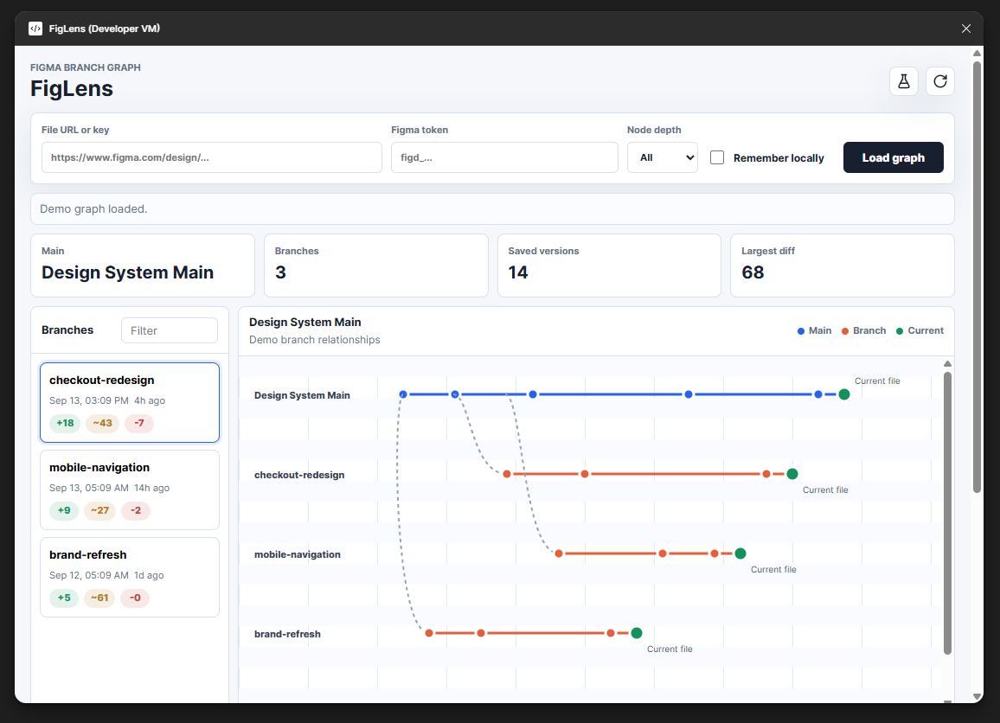
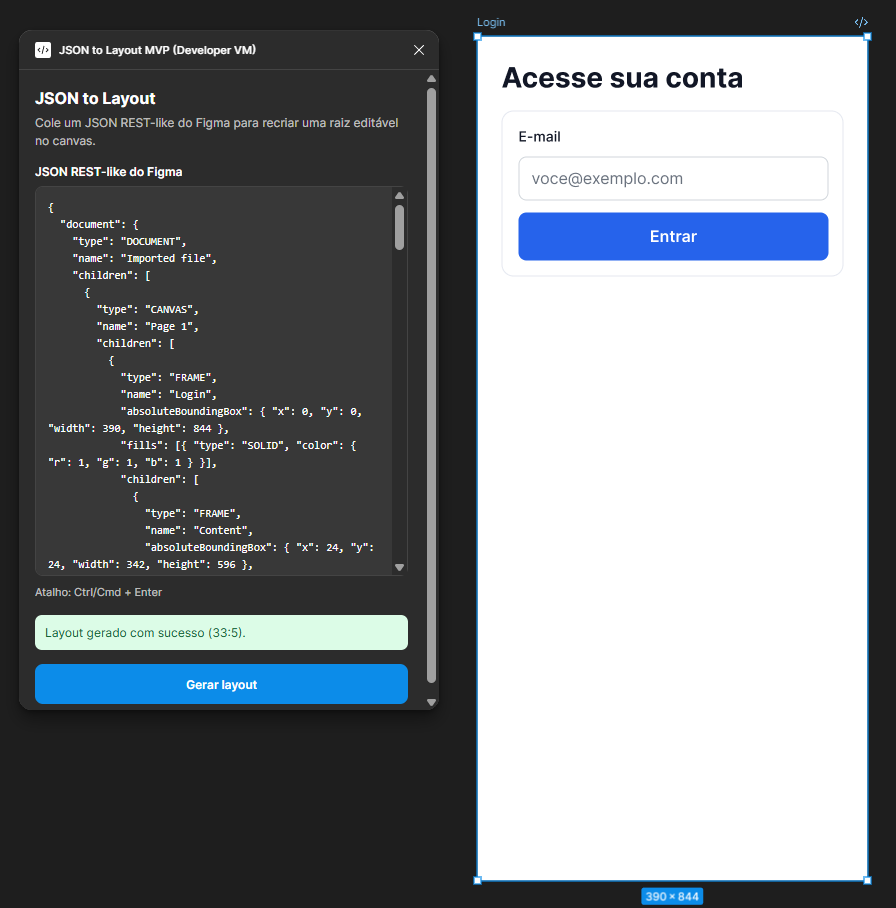

Coleção
Coisas que eu crio por conta própria, por pura curiosidade: de ferramentas para o meu próprio fluxo de trabalho a experimentos e outros hobbies.
Por
que criar?
O principal motivo de eu criar as minhas próprias coisas é poder atacar os problemas de um ponto de vista diferente. Depois de anos como designer especificando soluções, aprender a construí-las me deu um outro ângulo para enxergar cada problema.
O segundo motivo é que, quando você aprende a desenvolver, o limite deixa de existir. Se a ferramenta de que eu preciso não existe, eu crio. Se ela existe mas é paga, faço a minha própria versão para uso pessoal, sem comercializar nem plagiar nada para venda, muitas vezes em código aberto. No fim, é isso que programar me deu: acabaram os limites.
Os plugins
Três ferramentas pessoais, em estágios diferentes de maturidade.

Plugin // FigLensO que é o FigLens e qual o desafio?
A ideia
Branches no Figma não têm uma visão de histórico como no Git. Inspirado no GitLens, o FigLens desenha um grafo das branches e versões de um arquivo e mostra o quanto cada branch divergiu do main.
O desenvolvimento
Consome a REST API do Figma (branch_data e versions) e infere o grafo a partir das chaves de branch e dos timestamps, já que a API não expõe um merge graph real. A comparação é estrutural, por árvores de nós normalizadas, e há um modo demo para revisar a UI sem token.
Stack & status

Plugin // Json to LayoutO que é o Json to Layout e qual o desafio?
A ideia
Investigar uma ponte entre estrutura em JSON e criação de layout no Figma: pegar um JSON REST-like e transformá-lo em interface visual editável no canvas, em vez de montar tela a tela na mão.
O desenvolvimento
Um MVP deliberadamente pequeno: entrada por textarea, validação antes de criar qualquer node, tradução recursiva para a Plugin API e uma única raiz editável, com rollback quando a geração falha. Tudo local, sem backend. A evolução é planejada em MVPs, dos elementos nativos aos componentes instanciados.